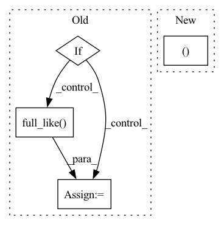

Pattern ID :30250
Before Change
one_hot_fake_labels = F.one_hot(fake_labels, num_classes=num_classes)
generator = misc.peel_model(generator)
ws = generator.mapping(zs, one_hot_fake_labels)
if style_mixing_p > 0:
cutoff = torch.empty([], dtype=torch.int64, device=ws.device).random_(1, ws.shape[1])
cutoff = torch.where(torch.rand([], device=ws.device) < style_mixing_p, cutoff, torch.full_like( cutoff, ws.shape[1]) )
ws[:, cutoff:] = generator.mapping(torch.randn_like(zs), one_hot_fake_labels, skip_w_avg_update=True)[:, cutoff:]
fake_images = generator.synthesis(ws)
else:
fake_images = generator(zs, fake_labels, eval=not is_train)After Change
generator_mapping=generator_mapping,
generator_synthesis=generator_synthesis)
else:
_, fake_images_eps = generator(zs_eps, fake_labels, eval=not is_train)
else:
fake_images_eps = None
return fake_images, fake_labels, fake_images_eps, trsp_cost, wsIn pattern: SUPERPATTERN
Frequency: 3
Non-data size: 4
Instances Fragment ID: 89722409
Project Name: postech-cvlab/pytorch-studiogan
Commit Name: 434cbf2212862f726f1e7cc9527bc42d08b947ee
Time: 2021-10-04
Author: first287@naver.com
File Name: src/utils/sample.py
M Class Name: AnonimousClass
N Class Name: AnonimousClass
M Method Name: generate_images(18)
N Method Name: generate_images(16)
M Parent Class:
N Parent Class:
M File Name: src/utils/sample.py
N File Name: src/utils/sample.py
M Start Line: 131
M End Line: 144
N Start Line: 87
N End Line: 152
Before Change
// adjust the step size
new_factor = self.step_mult * (errnorm + 1e-8) ** self.error_exponent
// if accepted and not t1_achieved:
if accepted:
factor = torch.minimum(torch.full_like( new_factor, self.max_factor) , new_factor)
if prev_rejected:
factor = torch.minimum(torch.ones_like(factor), factor)
not_t1_achieved = torch.logical_not(t1_achieved)
h[not_t1_achieved] *= factor[not_t1_achieved]
else:
factor = torch.maximum(torch.full_like(new_factor, self.min_factor), new_factor)
After Change
prev_rejected = not accepted
rk_state = (fnew, tnew, ynew, h)
return rk_state, t1_achieved
class RK23(RKAdaptiveStepSolver):
error_estimator_order = 2
Fragment ID: 89722411
Project Name: xitorch/xitorch
Commit Name: d91c4d6e56fb40b9f91fda53f69871e97dcb6abe
Time: 2021-12-30
Author: firman.kasim@gmail.com
File Name: xitorch/_impls/integrate/ivp/adaptive_rk.py
M Class Name: RKAdaptiveStepSolver
N Class Name: RKAdaptiveStepSolver
M Method Name: _single_step(3)
N Method Name: _single_step(3)
M Parent Class: object
N Parent Class: object
M File Name: xitorch/_impls/integrate/ivp/adaptive_rk.py
N File Name: xitorch/_impls/integrate/ivp/adaptive_rk.py
M Start Line: 125
M End Line: 165
N Start Line: 85
N End Line: 122
Before Change
Return a `Predictions` object with a single timepoint for each group.
if start_times is not None:
if isinstance(times, (np.datetime64, datetime.datetime)):
times = np.full_like( start_times, fill_value=times)
assert dt_unit is not None
if isinstance(dt_unit, str):
dt_unit = np.datetime64(1, dt_unit)
times = (times - start_times) / dt_unit // todo: validate int?After Change
Return a `Predictions` object with a single timepoint for each group.
if not isinstance(times, (list, tuple, np.ndarray )):
times = np.asanyarray([times] * self.num_groups)
if start_times is not None: Fragment ID: 89722414
Project Name: strongio/torchcast
Commit Name: 8cb6b7920cb7ff02cb44a7bab8ab482bb633be0c
Time: 2021-07-06
Author: jacob.dink@strong.io
File Name: torchcast/state_space/predictions.py
M Class Name: Predictions
N Class Name: Predictions
M Method Name: _subset_to_times(4)
N Method Name: _subset_to_times(4)
M Parent Class: nn.Module
N Parent Class: nn.Module
M File Name: torchcast/state_space/predictions.py
N File Name: torchcast/state_space/predictions.py
M Start Line: 388
M End Line: 393
N Start Line: 387
N End Line: 397